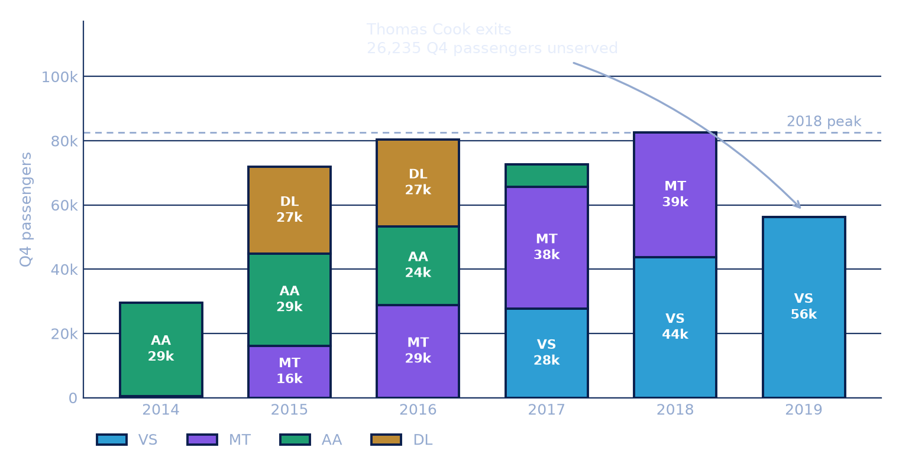
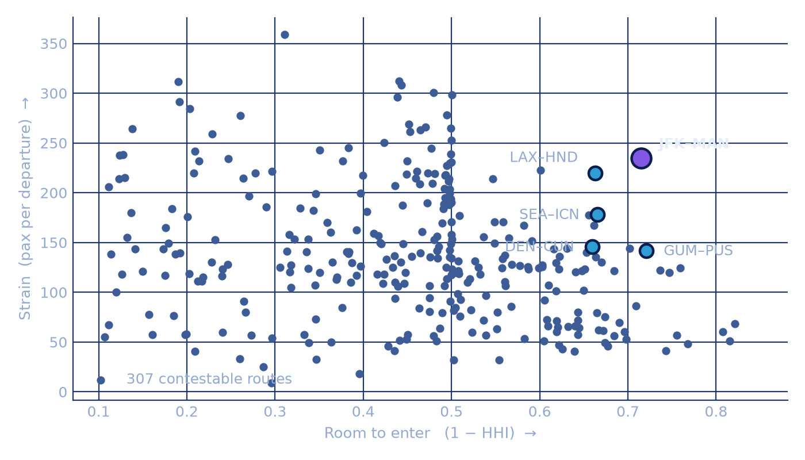

A capturability-first screen of 4,398 US to international airport pairs, built on thirty years of USDOT traffic records.
The board funded one rotation and refused the biggest markets. Ranking by volume returns slot-controlled fortresses. Size is evidence that demand is already served, so we score capturability instead.
Opportunity is demand that already exists, on planes that are already full, on a route nobody owns.
Four different units cannot be added, so each route is ranked 0 to 100 within the pool. We rank rather than standardise because traffic is heavily right-skewed. Room uses concentration, not a count of airlines: two carriers can be an open duopoly or a 97% fortress, and only HHI tells them apart.
Q4 passengers, 2015–19. All three sit far above our volume cut. Recommending any of them is advice the client already rejected.
The largest decile by volume is removed on their say-so, not because the data told us to. Keeping that cut visible separates their constraints from our findings.
Data note. The source files are not full years. Passengers cover Sep–Dec then Aug–Dec; departures Oct–Dec then Sep–Dec. Every figure uses a forced constant October to December window, the only one present in both files in every year. Totals are Q4 volumes, never annual.
This is not background. The weaknesses are the reason Strain and Room carry as much weight as raw demand: an airline with no slot portfolio and no connecting passengers wins on capturability or not at all.
Slot-controlled airports such as Heathrow and Tokyo Haneda. Hub fortresses where one carrier holds the traffic. Anything that only works with connecting passengers.
Second-city gateways, routes a carrier has just exited, and markets where the planes still fly full despite thin service.
Four cuts take every US to international airport pair down to a shortlist. Each one is a judgment call with a stated reason, and each is reversible.
Thresholds are logged in the notebook and reproducible from a clean kernel. The 302 contestable routes that did not reach the shortlist stay scored and rankable in the live screen, so any stage can be reopened and the thresholds moved.
| Route | TAI | Pax/dep | HHI | Verdict |
|---|---|---|---|---|
| LAX–HND | 89.1 | 220 | 0.34 | Rejected, slots |
| JFK–MAN | 87.9 | 235 | 0.28 | Recommended |
| DEN–CUN | 82.2 | 146 | 0.34 | No catalyst |
| SEA–ICN | 80.6 | 178 | 0.34 | Majors entrenched |
| GUM–PUS | 79.9 | 142 | 0.28 | Growth off a small base |
It ranks LAX–HND first. We reject it. Tokyo Haneda's US slots are allocated government to government under the bilateral treaty and held by Delta, United, American and ANA. Room measures concentration only, so three majors splitting a route evenly reads as competition when it is a closed shop. The seats are not expensive, they are legally unobtainable.
We overrode the model using knowledge the data does not contain, and labelled the override rather than retuning weights until our preferred answer won.
Only one finalist has a catalyst. The other four are healthy but static.
Manchester is the United Kingdom's second gateway: the same national market as Heathrow, without the slot fight Meridian cannot win. It is also the only finalist with a dated catalyst.
| Q4 pax | Deps | Pax/dep | |
|---|---|---|---|
| 2018 | 82,512 | 240 | 343.8 |
| 2019 | 56,277 | 176 | 319.8 |
| Shortfall | 26,235 | 64 | still full |
Read the last column. After losing nearly half the seats, the remaining flights still went out with 320 people aboard. The demand did not evaporate. It went unserved.
26,235 ÷ 343.8 = 76 flights over 92 days. Almost exactly one daily rotation, which is precisely what the board funded. We are not making a market. We are occupying a seat someone else left.

JFK–MAN wins outright whenever the score reflects Meridian's real constraints. Weight raw size instead and it collapses to 24th. That fragility is the finding, not a flaw we are hiding.
| Weighted toward | Top route | JFK–MAN |
|---|---|---|
| Capturability (Strain + Room) | JFK–MAN | #1 |
| Full planes (Strain) | JFK–MAN | #1 |
| Room to enter | JFK–MAN | #1 |
| Equal, our prior | LAX–HND | #2 |
| Growth | LAX–HND | #2 |
| Market size | LAX–HND | #24 |
All 307 contestable routes, four draggable weights, instant re-ranking. Click any
route for its carrier mix and Q4 history. Runs offline, no install.
dashboard/index.html · launched from the notebook
